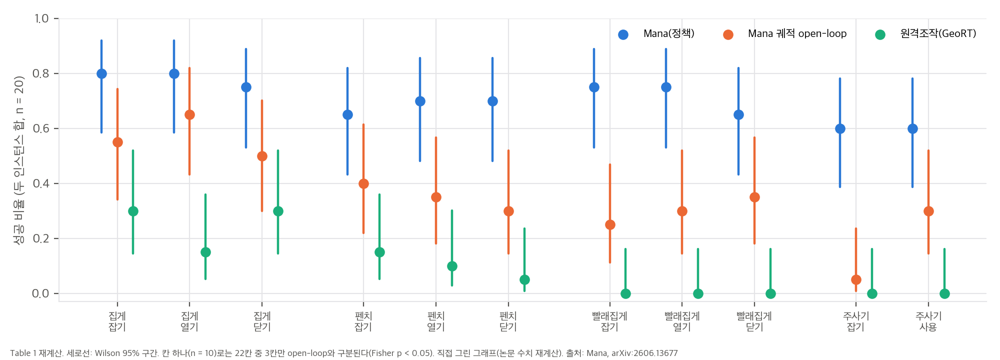
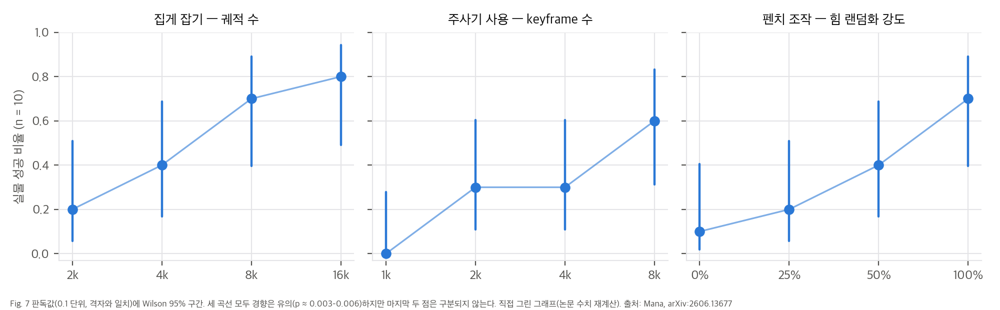
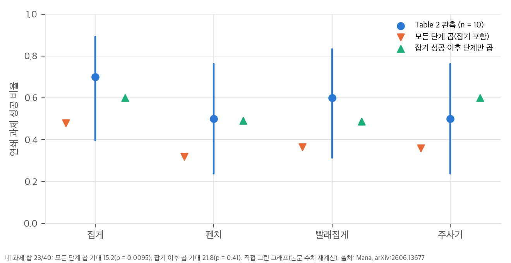
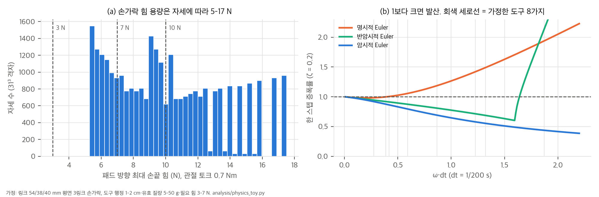

zhaohengyin/lightning-grasp(@ af43818)로 공개되어 있습니다(04 §2).한 줄 요약: 손잡이 두께가 1 cm 안팎인 관절형 도구(집게, 펜치, 빨래집게, 주사기)를 Allegro 손으로 탁자에서 집어 작동시키는 문제를, 컴퓨터 애니메이션처럼 keyframe을 먼저 만들고 그 사이를 채우는(inbetweening) 방식으로 풉니다. 파지 keyframe은 절차적으로 대량 생성하고, 접근은 motion planning, 접촉이 많은 짧은 구간만 RL로 만든 뒤, 성공한 시뮬레이션 궤적으로 점군 diffusion 정책을 학습해 실물에 zero-shot으로 옮깁니다.
논문이 내세우는 기여는 다음과 같습니다(Sec. 1, Abstract).
입력: 도구 메쉬 + 관절 모델(URDF) + affordance 클릭(손잡이·팔·플런저 영역, 도구당 < 1분)
│
▼ Grasp Generator: Lightning Grasp+ (contact field로 접촉 영역 → 손끝 위치·관절 최적화 → IsaacLab 안정성 필터)
keyframe 그래프: pre-grasp ─ grasp ─ in-hand actuation(열림·닫힘·밀기 상태들), 도구 관절 상태 전반에 촘촘히 샘플
│
▼ Trajectory Generator (구간마다 가장 단순한 방법)
pre-grasp : GPU RRT-Connect + 경로 평활화 (RL 불필요)
grasp : 법선 방향으로 조이는 절차적 닫기, 어려우면 짧은 RL
in-hand : keyframe 사이 목표 도달 RL (PPO, 힘 관련 랜덤화)
│
▼ 성공한 시뮬레이션 궤적만 저장(단계 라벨: grasping·opening·closing 등)
Student: 점군(512점, 손목 좌표) + 고유수용감각 → Perceiver(질의 4개) → transformer diffusion head → Δ손목 6D, Δ손 관절
배포: D435 → SAM 3 분할 + Fast Foundation Stereo 깊이 → 점군, 약 10 Hz(RTX 4090 2장)
| 항목 | 값 |
|---|---|
| r_tool | exp(−β₁₁‖q − q̃‖₁) + 0.3·exp(−100‖x − x̃‖ − 5‖log(RᵀR̃)‖). β₁₁ = 10(회전 관절), 50(주사기 직선 관절) |
| r_hand | exp(−10‖q_h − q̃_h‖₁), 잡기 단계에서는 + 10·exp(−50‖x_h − x̃_h‖ − 5‖log(RᵀR̃)‖) |
| r_contact | 힘 > ε인 손가락 링크–도구 링크 접촉 쌍의 개수 |
| 가중치 | w₁ = 0.1, w₂ = 0.15. 목표 도달 +100, 낙하·이탈 −50(리셋). 전체 보상 × 0.1 |
| 랜덤화 | 행동 잡음 U[−0.1, 0.1], 로봇 PD 이득 ×U[0.8, 1.2], 도구 PD 이득 ×U[0.8, 1.5], 질량 ×U[0.8, 1.2], 마찰 ×U[0.5, 1.5], 물체 힘 섭동 σ = α·m·g (α ~ U[0.05, 0.2]) |
| PPO | actor·critic MLP 512×4, privileged 상태 입력, γ = 0.99, ε = 0.2, λ = 0.95, 병렬 환경 4,096개, minibatch 8,192, 8 스텝마다 5 epoch, lr 1×10⁻⁴(KL 0.01 기반 조절) |
| 방법 | 집게 잡기·열기·닫기 | 펜치 잡기·열기·닫기 | 빨래집게 잡기·열기·닫기 | 주사기 잡기·사용 |
|---|---|---|---|---|
| 원격조작(GeoRT) | .3 .3 · .1 .2 · .3 .3 | .2 .1 · .1 .1 · .1 .0 | 0 0 · 0 0 · 0 0 | 0 0 · 0 0 |
| Ours (open-loop) | .5 .6 · .6 .7 · .4 .6 | .4 .4 · .3 .4 · .3 .3 | .3 .2 · .2 .4 · .4 .3 | .1 .0 · .3 .3 |
| Ours | .8 .8 · .8 .8 · .7 .8 | .7 .6 · .7 .7 · .7 .7 | .8 .7 · .8 .7 · .6 .7 | .7 .5 · .6 .6 |
(칸마다 인스턴스 1, 2의 성공률. 각 10회)

우리 분석: Table 1을 두 인스턴스 합(n = 20)으로 다시 그리고 Wilson 95% 구간을 붙였다.
해석 (재계산은 04_claim_verification.md와 analysis/table_check.py):
그림을 300 dpi로 렌더링해 읽으면 점이 모두 0.1 단위 격자에 정확히 놓입니다. 10회 시행과 정합합니다.
| 요인 | 1 | 2 | 3 | 4 |
|---|---|---|---|---|
| 집게 잡기 — 궤적 수 2k, 4k, 8k, 16k | 0.2 | 0.4 | 0.7 | 0.8 |
| 주사기 사용 — keyframe 수 1k, 2k, 4k, 8k | 0.0 | 0.3 | 0.3 | 0.6 |
| 펜치 조작 — 힘 랜덤화 0, 25, 50, 100% | 0.1 | 0.2 | 0.4 | 0.7 |

우리 분석: Fig. 7 판독값(10회 중 성공 수)과 Wilson 95% 구간.
손목 원격조작은 정책이 도구를 잡아 들어 올린 뒤에만 켭니다. 정밀한 도구–대상 정렬(예: 0.5 mm 전선)만 사람이 맡고, 손가락은 모두 정책이 움직입니다. 결과는 집게 집기 7/10, 펜치 자르기 5/10, 빨래집게 6/10, 주사기 주입 5/10입니다.
03 §2).

우리 분석: 단계별 성공률을 곱한 예측과 Table 2 관측.
03 §4). 시뮬레이션 손의 토크 상한이 실물과 같다면, 일부 학습 에피소드는 원리상 풀 수 없는 조건입니다(가설).04 §2).스크립트는 analysis/table_check.py(Table 1·2, Fig. 7, 부록 산술 → table_check_results.json)와 analysis/physics_toy.py(손가락 힘 용량, 적분기 안정성, 랜덤화 크기 → physics_toy_results.json)입니다. 둘 다 numpy·scipy 단일 스레드로 수 초 안에 끝납니다. 그래프는 analysis/plot_figures.py가 그립니다.
| 방법 | 22칸 평균 | 잡기 8칸 | 조작 14칸 |
|---|---|---|---|
| Ours | 0.705 | 0.700 | 0.707 |
| Ours (open-loop) | 0.364 | 0.312 | 0.393 |
| 원격조작(GeoRT) | 0.095 | 0.113 | 0.086 |
| 도구 | Ours | open-loop | 원격조작 | Ours vs open-loop p | 칸 단위로 유의한 칸 |
|---|---|---|---|---|---|
| 집게 | 47/60 [0.66, 0.87] | 34/60 | 15/60 | 0.019 | 0/6 |
| 펜치 | 41/60 [0.56, 0.79] | 21/60 | 6/60 | 4.7×10⁻⁴ | 0/6 |
| 빨래집게 | 43/60 [0.59, 0.82] | 18/60 | 0/60 | 9.0×10⁻⁶ | 1/6 |
| 주사기 | 24/40 [0.45, 0.74] | 7/40 | 0/40 | 1.9×10⁻⁴ | 2/4 |
대괄호는 Wilson 95% 구간입니다. 도구 단위로는 넷 모두 유의합니다. 반면 칸(n = 10) 단위로는 22칸 중 3칸만 p < 0.05입니다. 표에서 "0.8 대 0.5" 같은 칸 하나의 차이를 근거로 삼으면 안 됩니다. 8/10의 95% 구간은 [0.49, 0.94]입니다.
Table 1은 단계마다 그 단계의 안정된 시작 자세에서 따로 쟀습니다(Sec. 5.1). Table 2는 여러 단계가 이어진 과제입니다. 단계가 서로 독립이라고 보고 성공률을 곱해 Table 2와 비교했습니다. 단계별 값은 두 인스턴스 평균입니다.
| 과제 | 단계 성공률 | 모든 단계 곱 | 잡기 이후만 곱 | Table 2 |
|---|---|---|---|---|
| 집게 집기 | 0.80 · 0.80 · 0.75 | 0.48 | 0.60 | 7/10 |
| 펜치 자르기 | 0.65 · 0.70 · 0.70 | 0.32 | 0.49 | 5/10 |
| 빨래집게 | 0.75 · 0.75 · 0.65 | 0.37 | 0.49 | 6/10 |
| 주사기 주입 | 0.60 · 0.60 | 0.36 | 0.60 | 5/10 |
| 합 | 기대 15.2 | 기대 21.8 | 23/40 |
| 곡선 | 10회 중 성공 | 경향 검정 p | 끝점(1 vs 4) p | 마지막 두 점 p |
|---|---|---|---|---|
| 집게 잡기 vs 궤적 수 | 2, 4, 7, 8 | 0.0029 | 0.023 | 1.0 |
| 주사기 사용 vs keyframe 수 | 0, 3, 3, 6 | 0.0055 | 0.011 | 0.37 |
| 펜치 조작 vs 힘 랜덤화 | 1, 2, 4, 7 | 0.0030 | 0.020 | 0.37 |

P1 손가락 힘 용량. 링크 54/38/40 mm인 평면 3링크 손가락(Allegro 근사, 가정)에 관절 토크 상한 0.7 Nm(Sec. 6)을 주고, 원위 링크에 수직인 패드 방향으로 낼 수 있는 최대 힘을 31³개 자세에서 계산했습니다. 조건은 모든 관절에서 |J_iᵀ d|·f ≤ τ_max입니다.
| 양 | 값 |
|---|---|
| 한 관절 어림 τ/L (L = 0.06–0.07 m) | 10.0–11.7 N |
| 패드 방향 최대 힘 중앙값 / 90% 분위 / 최대 | 9.7 / 15.2 / 17.5 N |
| 7 N 이상 낼 수 있는 자세 비율 | 77% |
| 10 N 이상 | 47% |
| 손가락을 편 자세 | 5.3 N |
P3 랜덤화 범위(부록 A.3)를 힘으로 환산.
| 랜덤화 | 환산 | 필요한 힘 3–7 N과 비교 |
|---|---|---|
| 물체 힘 섭동 σ = α·m·g (α 0.05–0.2) | 30 g 도구 0.015–0.06 N, 100 g 0.05–0.2 N, 200 g 0.1–0.39 N | 최대 13%, 보통 수 % |
| 도구 PD 이득 ×0.8–1.5 | 작동력 2.4–10.5 N | 위쪽 끝이 10 N 한계를 넘음 |
| 로봇 PD 이득 ×0.8–1.2 | 같은 추적 오차에서 손끝 힘 ±20% | |
| 마찰 ×0.5–1.5 (기준 μ = 1 가정) | 마찰원뿔 반각 27°–56° |
부록 A.6은 "도구 강성과 힘이 커서 명시적 Euler 대신 암시적 Euler가 결정적"이라고 씁니다. 도구 관절을 감쇠 진동자 x'' + 2ζωx' + ω²x = 0로 두고 dt = 1/200 s 한 스텝의 증폭률(스펙트럼 반경)을 계산했습니다. 가정은 필요한 힘 3–7 N, 행정 1–2 cm, 유효 질량 5–50 g입니다. 그러면 k = F/s = 150–700 N/m, ω = 55–374 rad/s, ω·dt = 0.27–1.87입니다.
| 경우 (F, s, m) | ω·dt | 명시적 (ζ = 0.2) | 반암시적 | 암시적 |
|---|---|---|---|---|
| 3 N, 1 cm, 5 g | 1.22 | 1.42 (발산) | 0.71 | 0.58 |
| 3 N, 2 cm, 50 g | 0.27 | 0.98 | 0.94 | 0.92 |
| 7 N, 1 cm, 5 g | 1.87 | 1.94 (발산) | 2.13 (발산) | 0.44 |
| 7 N, 1 cm, 50 g | 0.59 | 1.06 (발산) | 0.87 | 0.79 |
각 항이 절반(exp = 0.5)이 되는 오차는 ln 2 / β입니다.
| 항 | β | 절반 오차 |
|---|---|---|
| 도구 회전 관절 (L1) | 10 /rad | 0.069 rad (4.0°) |
| 도구 직선 관절(주사기) | 50 /m | 1.39 cm |
| 도구 위치 | 100 /m | 6.9 mm |
| 도구 자세 | 5 /rad | 0.139 rad (7.9°) |
| 손 관절 (16 DoF L1 합) | 10 /rad | 합 0.069 rad, 관절당 평균 4.3 mrad |
| 손바닥 위치(잡기) | 50 /m | 1.39 cm |
zhaohengyin/lightning-grasp @ af43818(2026-06-12)는 Mana 서술과 대조했습니다(§2).table_check.py), 물리 toy(physics_toy.py), 코드 읽기만 했습니다.| # | 주장 (출처) | 재계산·확인 | 판정 |
|---|---|---|---|
| C1 | 잡기와 손안 조작 모두 약 70% (Sec. 5.2) | 22칸 평균 0.705, 잡기 0.700, 조작 0.707 | ✅ |
| C2 | 원격조작은 집게에서 약 30% (Sec. 5.2) | 집게 6칸 평균 0.25, 빨래집게·주사기는 전부 0 | ✅ |
| C3 | 기준선보다 낫다 (Table 1) | 도구별 합산 Fisher p = 0.019–9×10⁻⁶, 전체 155/220 대 80/220 p = 9×10⁻¹³. 칸 단위(n = 10)로는 22칸 중 3칸만 p < 0.05 | ✅ 합산 기준. 칸 단위 차이는 잡음 범위 |
| C4 | 데이터 양·상태 다양성·힘 랜덤화에 성능이 비례 (Fig. 7) | 판독값 2·4·7·8 / 0·3·3·6 / 1·2·4·7 (10회 중), 경향 p = 0.003–0.006. 마지막 두 점은 구분되지 않음(p = 0.37–1.0) | ✅ 경향. 포화 여부는 미확인 |
| C5 | Fig. 7 최대 설정 = 주 설정 | 끝점이 Table 1 칸과 정확히 같음(0.8, 0.6, 0.7) | ✅ (추론) |
| C6 | 도구 사용 과제 5–7/10 (Table 2) | 단계별 곱(잡기 포함) 기대 15.2/40에 비해 관측 23/40은 p = 0.0095. 잡기 이후만 곱하면 기대 21.8, p = 0.41 | ⚠️ 잡기 성공 조건부로 읽어야 정합. 끝단 성공률은 0.30–0.56으로 추정 |
| C7 | 사람 입력은 도구당 1분 미만 (Abstract, Sec. 3.1) | affordance 클릭만 해당. 카메라 스캔 메쉬, 관절 URDF, 힘 게이지 스프링 식별(A.6)은 따로 필요 | ⚠️ 범위가 좁음 |
| C8 | zero-shot sim-to-real (Abstract) | 손가락과 잡기는 자율. 도구–대상 정렬 손목 이동은 원격조작(Fig. 1 캡션, Sec. 5.4) | ⚠️ 부분적 |
| C9 | 0.7 Nm, 링크 0.06–0.07 m라 10 N 초과 도구 불가 (Sec. 6) | τ/L = 10.0–11.7 N. 평면 3링크 toy에서 패드 방향 최대 힘은 자세에 따라 5.3–17.5 N(중앙값 9.7 N) | ✅ 어림값으로는 맞음. 실제 한계는 자세 의존 |
| C10 | 암시적 Euler가 결정적 (A.6) | dt = 1/200 s, 3–7 N·행정 1–2 cm·5–50 g에서 명시적 Euler는 ζ = 0.2라도 8가지 중 6가지 발산. 암시적은 모두 안정 | ✅ (toy) |
| C11 | 힘 랜덤화로 견고성 확보 (A.3, Fig. 7 오른쪽) | 물체 섭동 σ = αmg는 작동력의 수 %. 도구 이득 ×1.5는 7 N 도구를 10.5 N으로 만들어 C9의 한계를 넘음. "100%"의 정의 없음 | ⚠️ 정의 누락, 범위 점검 필요 |
| C12 | 실시간 약 10 Hz (Sec. 4.1) | RTX 4090 2장 기준. 정책은 chunk 없이 행동 하나 | 참고 |
| C13 | 보상 설계 (A.2) | 손 관절 L1 β = 10은 관절당 평균 4.3 mrad에서 절반이 됨. 접촉 개수 항은 상한이 없어 접촉 9개면 r_tool 최대와 같음 | 참고 (03 §6) |
af43818)Mana는 LG 위에 LG+를 만들었다고 씁니다(Sec. 3.1, 부록 A.1). 공개 LG 저장소(파일 42개, CUDA는 바이너리로만 배포)를 읽고 Mana의 서술과 맞춰 보았습니다.
| # | 내용 | Mana 서술과의 관계 |
|---|---|---|
| D1 | 파이프라인은 다음 순서입니다(demo.py). 접촉 영역에서 접촉점 탐색(0차 최적화, wrench 점수) → 접촉 ID 샘플링 → 거친 IK(batch_ik, 접촉 위치·법선 정합, 재시도 10회, err_thresh 0.02로 필터) → 반복 투영 + IK 미세조정(batch_contact_adjustment, 기본값 4회 × 3스텝, 3스텝마다 재투영, 허용 오차 4 mm) → 자유 손가락 배치 + 충돌 필터. |
Sec. 3.1의 "contact field 질의 → 접촉 영역 → 손끝 위치와 관절 최적화"와 일치합니다. |
| D2 | IK에 침투 해소 항이 없습니다. 충돌은 마지막 단계에서 결과를 버리는 필터로만 씁니다(collision.py, batch_assign_free_finger_and_filter). |
Mana가 지적한 LG의 한계("kinematic optimization is not collision-aware", A.1)를 코드로 확인했습니다. 따라서 LG+의 핵심(Algorithm 1의 p → p + d 목표)은 공개 코드에 없습니다. |
| D3 | 지면·탁자 같은 환경 장애물 개념이 없습니다. 물체 자세는 손 기준 표준 공간에서 샘플링하고, 손–물체·손–손 충돌만 검사합니다(object_placement.py). |
Sec. 3.1의 "in the presence of environmental obstacles"와 탁자 위 파지(Fig. 9)는 공개 LG만으로는 재현할 수 없습니다. |
| D4 | README가 "hand–object 침투를 줄이는 position iteration을 운동학 미세조정에 넣은 판"을 다음 릴리스로 예고합니다(2026-05-24 작성). 10월 말 기준 main에는 반영되지 않았습니다. | LG+와 같은 기능으로 보입니다(추정). |
| D5 | CUDA 커널(lygra/cpp/)은 README뿐이고, .so 바이너리는 Releases에서 받아야 합니다. 지원 환경은 Ubuntu 22.04/24.04, NVIDIA GPU, CUDA 12, Python 3.8–3.10입니다. |
macOS·Apple GPU에서는 실행할 수 없습니다. |
| D6 | LICENSE는 "CC-by-NC License, Copyright (c) Zhao-Heng Yin"입니다(GitHub 자동 판별은 NOASSERTION). 소스 파일 머리글에는 "All rights reserved"가 있습니다. | 비상업 연구 사용만 가능합니다. |
| D7 | Allegro 설정(lygra/robot/allegro.py)이 이미 있습니다. 손과 물체 자산은 Releases에서 따로 받습니다. |
Mana의 손(Allegro)과 같아, LG+만 있으면 파지 keyframe 단계를 재현하는 출발점이 됩니다. |
| 항목 | 논문에 있음 | 없음 |
|---|---|---|
| RL 보상·가중치·랜덤화·PPO 설정 | ✅ 부록 A.2–A.4 | 에피소드 길이, 목표 도달 임계값, ε(접촉 힘 문턱) |
| 정책 구조·학습 설정 | ✅ 부록 A.5 | 점군 랜덤화 크기, 도구별/공용 정책 여부 |
| 데이터 규모 | 궤적 16k, keyframe 8k (Fig. 7 최대 점) | 도구·전이별 분포, 생성 시간, GPU 시간 |
| 도구 모델 | 스캔 메쉬, 스프링–질량–댐퍼, 힘 게이지 | 측정 강성·감쇠 값, URDF |
| 시뮬레이션 | dt 1/200, position iteration 16–32, velocity 4–6, 암시적 액추에이터 | 손 시스템 식별 결과 |
| 손끝 | 제작 절차(A.7, Fig. 5) | 치수 파일, 실리콘 경도 외 사양 |
| 평가 | 10회, 단계별, 두 인스턴스 | 단계 시작 자세 분포, Table 2 시행 정의 |
불가능합니다. Mana 코드(데이터 생성기, LG+, RL 환경, 도구 모델, 정책)가 공개되지 않았습니다. 공개된 것은 LG뿐이고, 그것도 지면 장애물과 침투 해소가 없는 판입니다(D2, D3).
| 구성 요소 | 공개 여부 | 필요한 것 |
|---|---|---|
| 파지 keyframe (LG) | ✅ (바이너리, 비상업) | Ubuntu + NVIDIA GPU + CUDA 12 |
| LG+ (탁자 위 얇은 물체) | ❌ | Algorithm 1을 직접 구현. LG CUDA 소스가 없어 Python 쪽에 IK 목표를 추가해야 함 |
| MP (GPU RRT-Connect) | 일반 기법 | cuRobo 같은 공개 플래너로 대체 가능(추정) |
| RL 전이 (IsaacLab PPO) | 틀은 공개 | 도구별 URDF·스프링 식별, 보상·랜덤화는 부록 A.2–A.3대로 |
| 점군 diffusion 정책 | 구조만 공개 | 구현은 표준(Perceiver + DDPM head) |
| 배포 지각 (SAM 3 + Fast-FoundationStereo) | ✅ | NVIDIA GPU(논문은 RTX 4090 2장) |
| 하드웨어 | — | xArm7 + Allegro + D435, 실리콘 손끝 성형 |
번호 [n]은 논문의 참고문헌 번호입니다. 별도 표기가 없는 서지는 논문 참고문헌 목록을 옮긴 것이고, 각 논문을 열어 검증하지는 않았습니다. GitHub 정보는 2026-10-29에 gh api로 확인했습니다.
[다지 파지 합성] DexGraspNet [19] · UniDexGrasp++ [21] · Dexonomy [26] · SpringGrasp [17]
│
└─ Lightning Grasp [50] (같은 1저자, 절차적 파지 합성, contact field) ─┬─ DexterityGen [3]
└─ ★ LG+ (이 논문 부록 A.1, collision-aware IK)
[sim-to-real 손안 조작 RL] OpenAI [1], Rubik's Cube [35] · DeXtreme [11] · 촉각 회전 [12] · DexScrew [34]
[장기 과제 연결] Sequential Dexterity [13] (정책 사슬)
[애니메이션식 접근] Liu, "Dextrous manipulation from a grasping pose", SIGGRAPH 2009 [14] (교신저자 C. K. Liu)
[관절형 물체·도구] DexArt [36] · 두 손 뚜껑 [37] · 문·노트북 등 큰 관절 물체 [36–42]
공중·고정 초기 파지에서의 도구 조작: Xu et al. [47], Atar et al. [48]
강체 도구 zero-shot: SimToolReal [5]
[원격조작 데이터] DexPilot [6] · Telekinesis [7] · Open-TeleVision [8] · Bunny-VisionPro [9] · GeoRT [10](같은 1저자)
▼
★ Mana: 탁자 위 얇은 관절형 도구의 잡기 → 작동 전체를, 절차적 파지 keyframe + MP/RL 사이 채우기 + 점군 diffusion 증류로
차별점 요약: 가장 가까운 선행연구 [47, 48]은 손 안에 이미 안정적으로 쥔 상태에서 시작합니다. Mana는 탁자 위 두께 1 cm 도구를 집어 올리는 것부터 작동까지 다루고, 사람 시연 없이 시뮬레이션 데이터만 씁니다. 방법상으로는 긴 RL 탐색 문제를 "파지 keyframe 그래프 + 짧은 전이"로 쪼갠 것이 핵심입니다. 이는 애니메이션의 keyframe과 inbetweening, 그리고 교신저자 C. K. Liu의 2009년 "파지 자세에서 출발하는 손 조작"[14]의 연장선입니다.
| 역할 | 출처 | 이 논문에서의 쓰임 |
|---|---|---|
| 파지 합성 | Lightning Grasp [50] arXiv:2511.07418 (같은 1저자) | contact field 질의 → 접촉 영역 → 손끝 위치·관절 최적화. 공개 코드 있음(§5) |
| 얇은 물체 파지 | LG+ (부록 A.1, 새로 제안) | LM IK에 침투 해소 목표(p → p + d) 추가, CUDA. 공개되지 않음 |
| 시뮬레이터 | IsaacLab [51] arXiv:2511.04831 | 파지 안정성 필터, RL, 데이터 생성 |
| 경로 계획 | RRT-Connect [52] | GPU 병렬 구현으로 pre-grasp 접근 |
| RL | PPO (부록 A.4) | 목표 도달형 전이, privileged 상태 |
| 분할 | SAM 3 [53] arXiv:2511.16719 | 배포 시 도구 마스크 |
| 깊이 | Fast-FoundationStereo [54] arXiv:2512.11130 | 스테레오(D435 좌우 IR) 깊이 → 점군 |
| 점군 인코더 | Perceiver [55] | 질의 토큰 4개 |
| 생성 정책 | DDPM [56] | transformer diffusion head, 다음 행동 하나 |
| 원격조작 기준선 | GeoRT [10] (같은 1저자) | 위치 기반 리타겟 원격조작 |
| 상태 다양성의 근거 | "Emergent dexterity via diverse resets" [58] (ICLR 2026) | keyframe을 촘촘히 뽑는 이유로 인용 |
| 원격조작 한계의 근거 | DexJoCo [57] arXiv:2605.16257 | "원격조작은 약 30%" 관찰의 근거로 인용 |
| 논문 | 관계 |
|---|---|
DexScrew (dexscrew/) |
Mana가 [34]로 인용합니다. 둘 다 "힘이 필요한 손안 조작"을 시뮬레이션 RL로 풉니다. DexScrew는 단순화한 시뮬레이션에서 RL 기술을 배우고, 그 기술을 텔레옵 버튼으로 써서 실물 촉각 데이터를 모읍니다. Mana는 시연 없이 시뮬레이션 데이터만으로 증류합니다. 그 대신 도구 스프링 시스템 식별과 큰 힘 랜덤화로 sim-to-real 간극을 메웁니다. |
FlashDexRetarget (flashdexretarget/) |
둘 다 "기준 자세 사이를 RL로 채우는" 데이터 생성입니다. FlashDexRetarget은 사람 시연의 레퍼런스를 정책 하나로 추적하고, 물체 보조 힘 커리큘럼으로 탐색을 돕습니다. Mana는 사람 시연 대신 절차적 파지 keyframe을 쓰고, 긴 문제를 짧은 전이로 쪼개 탐색 부담을 줄입니다. 쪼갠 대가로 단계 연결은 원격조작에 맡깁니다(01 §4.2). |
GraspSense (graspsense/) |
둘 다 "접촉 위치에 따라 허용·필요한 힘이 달라진다"를 다룹니다. GraspSense는 힘 지도를 명시적으로 계획하지만 강체 시뮬레이션이라 손상을 검증하지 못했습니다. Mana는 힘을 명시적으로 계획하지 않고, RL과 랜덤화로 마찰원뿔 안 힘 분배를 암묵적으로 배웁니다. |
Reactive Grasp (reactive_grasp/) |
같은 문제의식(위치 기반 제어·원격조작으로는 힘을 못 맞춘다)에서 출발합니다. Reactive Grasp는 기하 접점 추정 + QP로 손 전체 power grasp의 힘을 실시간 조절합니다. Mana는 정밀 파지에서 학습 정책으로 힘을 냅니다. Mana의 한계(10 Hz, 촉각 없음, 미끄러짐 감지 불가)는 Reactive Grasp식 저수준 힘 조절 층과 결합할 자리로 보입니다(해석). |
DexPolicy (dexpolicy/) |
둘 다 궤적·레퍼런스가 있는 dexterous RL의 탐색 문제를 다룹니다. DexPolicy는 탐색 잡음 σ의 스케줄로 풀고, Mana는 문제를 keyframe 사이 짧은 전이로 쪼개서 풉니다. |
AlphaNIST (alphanist/) |
둘 다 "다양한 시작 상태"를 견고성의 핵심으로 봅니다. AlphaNIST는 OmniReset(arXiv:2603.15789, ICLR 2026)의 reset bank와 성공률 기반 시작 상태 샘플링을 씁니다. Mana는 [58] "Emergent dexterity via diverse resets and large-scale RL"(ICLR 2026)을 인용하며 keyframe 밀도를 늘립니다(Fig. 7 가운데). 저자·학회·주제로 보아 [58]은 OmniReset과 같은 논문으로 보입니다(추정, arXiv 번호 미확인). |
| Lightning Grasp (arXiv:2511.07418) | Mana 데이터 생성의 "동력원"입니다(프로젝트 페이지 표현). Mana 본문에서 확인되는 의존 관계는 두 가지입니다. ① 기능 영역 위 파지를 LG로 생성하고(Sec. 3.1), ② 지면 근처 얇은 물체에서 LG의 운동학 최적화가 충돌을 고려하지 않는 한계를 LG+로 고쳤습니다(부록 A.1). 공개 LG 코드의 IK에는 침투 해소 항이 없고 충돌은 사후 필터로만 쓰입니다(04 §2). |
| 주제 | 관련성 | 근거 수준 |
|---|---|---|
| DexMimicGen / MimicGen 계열 (소수 시연을 대량 시뮬레이션 데이터로 늘리기) | Mana도 "시뮬레이션에서 대량 궤적 생성 → 정책 증류"입니다. 시연 대신 절차적 keyframe을 쓴다는 점만 다릅니다. 비교 기준선으로 자연스럽습니다. | 내 사전 지식. 서지 확인 필요 |
| Teacher–student 증류 (privileged RL teacher → 시각 student) | 부록 A.3·A.4가 RL 정책을 "(teacher)"라고 부릅니다. 데이터 생성 RL이 teacher, 점군 diffusion이 student인 구조입니다. DAgger 같은 on-policy 증류 대신 성공 궤적만으로 오프라인 증류한 점이 차이입니다. | 논문 표현에서 확인. 해석 |
| Hybrid position–force control, impedance control | 논문은 "precise hybrid position-force control"이 필요하다고 쓰지만(Sec. 2), 제어는 관절 PD와 학습 정책입니다. 명시적 힘 제어 층을 두는 대안과 비교하지 않았습니다. | 내 해석 |
한계: 4절의 서지 정보는 내 사전 지식에 근거하므로, 게시 전에 원문을 확인해야 합니다.
| 저장소 | 무엇인가 | 공식 여부 | 라이선스 | ★ | 마지막 push | 확인 커밋 |
|---|---|---|---|---|---|---|
| (Mana 코드) | 데이터 생성기, LG+, RL 환경, 정책 | — | — | — | — | 미공개. 프로젝트 페이지에 코드 링크가 없고, 1저자 공개 저장소 목록에도 없음 |
| zhaohengyin/lightning-grasp | Lightning Grasp 공개 구현(Allegro, LEAP, Shadow, D'Claw 설정) | 같은 저자의 구성 요소 공식 | 자체 LICENSE(CC BY-NC 문구, GitHub 표기 NOASSERTION) | 226 | 2026-06-12 | af43818 (shallow clone, repos/) |
| facebookresearch/GeoRT | 원격조작 기준선 | 기준선 공식(같은 1저자) | NOASSERTION | 236 | 2025-09-02 | fb2075e (메타데이터만) |
| facebookresearch/sam3 | 분할 | 구성 요소 | NOASSERTION(자체 라이선스) | 12,139 | 2026-10-23 | f1647e8 (메타데이터만) |
| NVlabs/Fast-FoundationStereo | 스테레오 깊이 | 구성 요소 | NOASSERTION(자체 라이선스) | 1,570 | 2026-09-11 | 476f424 (메타데이터만) |
| isaac-sim/IsaacLab | 시뮬레이터 | 구성 요소 | NOASSERTION(BSD-3 계열) | 8,511 | 2026-10-29 | 6d37745 (메타데이터만) |
| tylerlum/simtoolreal | SimToolReal [5] 공식 구현(강체 도구, 같은 교신저자 C. K. Liu) | 관련 연구 공식 | MIT | 424 | 2026-09-21 | 313d5ae (메타데이터만) |
Lightning Grasp 저장소 README의 요점은 다음과 같습니다.